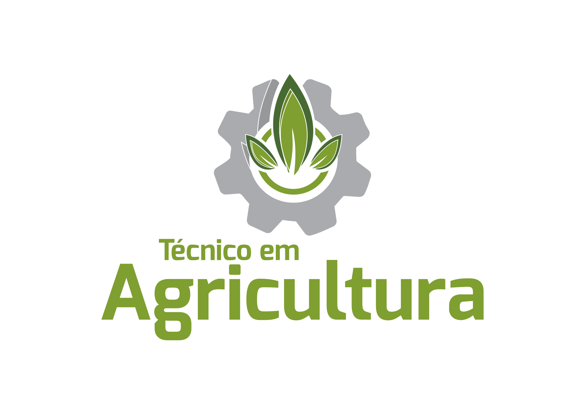
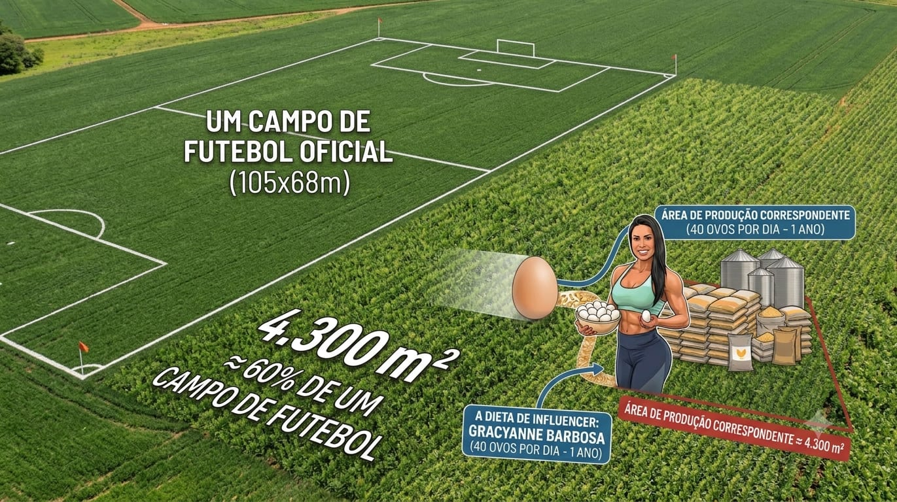

CPSEA101 · Técnico em Agricultura · Aula 2 de 14 · 12/08
Abordagem sistêmica, sistemas alimentares e cadeias produtivas
Duas coisas escondidas na mesma legenda: o sistema que você vai aprender a desenhar, e a cadeia que decide o preço dele.
Docentes
Róberson e Ezequiel

Antes de começar
Três tempos, uma noite só
Olhar sistêmico, propriedade como sistema e posição na cadeia, aplicados a um caso e depois ao papel pardo.
O gancho
Um post, 922 comentários, e as camadas de um sistema alimentar que já estavam escritas nele.
A teoria
Os pressupostos do olhar sistêmico, a propriedade como sistema, e os três segmentos de qualquer cadeia.
O papel pardo
Em grupo: desenhar uma propriedade e posicioná-la na cadeia, no mesmo cartaz.
Tempo 1, o gancho. Fevereiro de 2025
17,5 mil curtidas. 922 comentários.
Estava tudo escrito ali, nas mesmas quatro linhas.
@forbesbr, 20 de fevereiro de 2025
"Os consumidores brasileiros têm se deparado com caixas de ovos custando muito mais que o normal nas prateleiras dos supermercados. Isso é um reflexo direto da alta demanda pela proteína e também dos elevados custos de produção no setor, além das recentes ondas de calor e outros problemas que prejudicam a oferta."
"alta demanda pela proteína"jusante, consumo
"elevados custos de produção"montante, milho, soja, ração
"ondas de calor"ambiente, atravessa as duas
O post diagnosticou as três camadas de um sistema alimentar em quatro linhas. Dos 922 que comentaram, quantos leram assim? O problema não é falta de informação. É falta de leitura sistêmica.
Tempo 1, o contexto que ninguém puxou
Duas crises, mesmo ano, causas diferentes
SBT News, 11 de fevereiro de 2025
Estados Unidos
Gripe aviária derruba o plantel de poedeiras. No varejo americano, a dúzia de ovos grandes classe A chega a US$ 6,23 em março de 2025, recorde da série.
Preço médio ao consumidor, BLS, série APU0000708111.
Brasil
O país não registrou gripe aviária em aves comerciais. Mesmo assim o ovo encareceu, porque a ração ficou mais cara: o milho subiu, com a área plantada na menor da série histórica da Conab.
Tempo 1, quem lucrou com a crise americana
Mesma crise, custo para uns, lucro para outros
Folha de S.Paulo, via Financial Times
Em junho de 2026, o Departamento de Justiça dos Estados Unidos e 17 procuradorias estaduais entraram com ação civil contra Cal-Maine, Versova e Hickman's por coordenarem lances, entre junho de 2022 e março de 2025, para inflar a cotação diária de ovos da Urner Barry, referência de preço nos contratos de atacado do país. As empresas negam a conduta e fecharam acordo no mesmo dia.
US$ 320 miobtidos pela família fundadora da Cal-Maine ao vender sua participação, em abril de 2025
US$ 3,3 mipagos aos estados no acordo, mais doação de cerca de 53 milhões de ovos a bancos de alimentos
A venda da participação ocorreu dias depois de a empresa informar ao mercado que havia recebido intimação civil do Departamento de Justiça. A Hickman's foi adquirida em novembro de 2025 pela Mantiqueira USA, joint venture entre a família Pinto, da Mantiqueira Alimentos, e a JBS. Valor não divulgado.
Tempo 1, a crise brasileira
Sem gripe aviária, e mesmo assim mais caro
Colheita de milho para grão
A alta brasileira nasceu na ração, não no aviário. O milho encareceu, com a área de milho verão na menor da série histórica da Conab, desde 1976 e 1977.
Caixa de 30 dúzias de ovos vermelhos foi de R$ 171 para R$ 258 em Belo Horizonte, entre janeiro e fevereiro de 2025, segundo o Cepea, da Esalq/USP.
A ração é o maior custo de produção de ovos, e o milho é a maior fração da ração. Quando o milho sobe, o ovo sobe, mesmo sem nenhum problema sanitário no aviário.
Tempo 1, o comprador novo
O produtor teve para onde vender melhor
+185%na exportação brasileira de ovos entre 2024 e 2025
≈ 17,75 mil texportadas aos Estados Unidos em 2025, partindo de quase zero em 2024
A crise americana puxou demanda direta por ovo brasileiro. Parte do ovo que iria para a gôndola nacional seguiu para o porto, mais um fator de alta em cima do milho.
NCM 0407.21.00, ovos de mesa, ComexStat/MDIC. O movimento perdeu força depois das tarifas dos Estados Unidos, em agosto de 2025, quando parte do volume foi redirecionada para outros destinos.
Tempo 1, um cálculo que virou piada
40 ovos por dia
Gracyanne Barbosa e os ovos, antes e depois de virar assunto
No BBB25, a atriz e fisiculturista Gracyanne Barbosa foi a única pessoa desta história inteira que fez uma conta em vídeo, calculando quantos ovos precisaria levar para casa se ficasse confinada por três meses.
"40 ovos por dia, vezes 7 dias na semana, vezes 15 semanas." Chegando a 4.200 ovos, em vídeo publicado nas redes durante o BBB25, janeiro de 2025
40 ovos por dia é uma afirmação de dieta extrema que circulou sem verificação nenhuma. Serve aqui como âncora de cálculo, não como modelo nutricional. Ela parou na primeira camada. E se a gente não parar aqui?
Tempo 1, a conta um nível abaixo
Da dieta ao hectare

≈ 4.000 m², 56% de um campo de futebol oficial
Camada
Cálculo
Resultado
Ano inteiro
40 × 365
14.600 ovos
Equivalente humano
÷ 288 ovos/hab/ano (ABPA, 2025)
51 brasileiros
Plantel necessário
÷ 250 ovos/ave/ano civil
58 poedeiras
Ração
1.217 dz × 1,50 kg/dz
1,83 t/ano
Milho, 63% da ração
1.150 kg ÷ 6,61 t/ha
1.740 m²
Soja em grão
farelo, 30% da ração, em equivalente grão; 711 kg ÷ 3,13 t/ha
2.270 m²
Terra necessária
≈ 4.000 m²
Coeficiente de postura: linhagem Hisex White, 250 ovos por ave por ano civil. Produtividade de milho e soja: Conab, Rio Grande do Sul, safra 2025 e 2026. Rendimento de esmagamento da soja: Abiove.
Tempo 1, os elos antes da lavoura
E antes do milho?
Os elos que não aparecem na dúzia
A conta parou no milho e na soja porque são o maior custo. Não porque são o começo.
Genética, linhagem melhorada por décadas, de poucas multinacionais. A base genética do plantel brasileiro é importada.
Núcleo vitamínico e mineral, a fração da ração que não é milho nem farelo, com preço em dólar.
Sanidade, sem gripe aviária em ave comercial no Brasil por biosseguridade, não por sorte. Foi o que permitiu exportar na crise americana.
Embalagem, energia, frete, cada um com cadeia própria.
Tempo 1, a virada
O que muda quando você olha o sistema
O preço de um alimento nunca nasce numa causa só. Nasce no cruzamento entre o que acontece antes da porteira, como ração, genética e clima, dentro da porteira, como manejo, escala e decisão da família, e depois da porteira, como quem compra, para onde vai e o que o comprador paga.
Dezoito meses depois desse post, em julho de 2026, o Cepea registrou o preço do ovo no menor patamar real para o mês desde 2019. A mesma cadeia que empurrou o preço para cima também o trouxe de volta para baixo, quando a oferta se ajustou. É o tipo de movimento que vocês vão aprender a nomear ainda hoje.
Cepea, atacado, ovo vermelhoR$ 4,10 a 4,56por dúzia, julho de 2026
Menor patamar real para o mês desde 2019
Tempo 2, teoria
O que é um sistema alimentar
Adaptado de Food System Map, Nourish
Um sistema alimentar reúne tudo que produz, transforma, distribui e consome alimentos numa sociedade, junto com o ambiente, a economia, a política e a saúde que atravessam esse processo.
O caso do ovo mostrou isso na prática: genética e clima do lado biológico, custo e exportação do lado econômico, hábito alimentar do lado social, tudo entrelaçado numa única caixa de ovos no mercado.
A cadeia produtiva de um único produto, que veremos daqui a pouco, é um recorte dentro desse sistema maior.
Tempo 2, teoria
O homem, a sociedade e a produção de alimentos
Foto: Sergio Amaral/MDS, Wikimedia Commons, CC BY-SA 2.0
Produzir alimento nunca foi só uma técnica. Desde as primeiras roças, a forma de produzir organiza quem trabalha, quem decide, quem come e quem sobra fora da mesa.
Escala do indivíduo, o que cada família planta, cria e consome, e o que sobra para vender.
Escala da região, como um território se especializa, e o que isso cria de dependência entre regiões.
Escala do país, política agrícola, comércio exterior, segurança alimentar como questão de estado.
Toda sistematização de experiência que vocês vão fazer neste semestre está, em algum grau, contando essa relação entre uma família e a produção de alimentos, numa escala pequena e concreta.
Tempo 2, teoria
Os cinco pressupostos do olhar sistêmico
Trocar o olhar de lavoura isolada pelo olhar de sistema começa aqui.
1
Interação
A ação entre elementos é recíproca. Não é só A sobre B. É A sobre B e B sobre A.
2
Complexidade
Não é complicação. Depende da quantidade de elementos e dos tipos de relação entre eles.
3
Totalidade
O conjunto não se explica só pelas partes isoladas.
4
Hierarquia
Há escalas de abrangência. Subindo na escala, os sistemas ficam mais complexos.
5
Organização
Um lado estrutural, o arranjo, e um lado funcional, o que faz o sistema operar.
Há coerência nos atos do agricultor mesmo quando eles contrariam a recomendação técnica. Encontrar essa coerência, e não julgá-la, é a postura que a disciplina exige.
Tempo 2, teoria aplicada
Os cinco pressupostos, no caso do ovo
Interação
O preço do milho afeta o preço do ovo, e a demanda por ovo afeta a demanda por milho. A relação anda nos dois sentidos.
Hierarquia
A escala do galpão, a escala do país e a escala do mercado internacional são sistemas diferentes, um dentro do outro.
Totalidade
Nenhuma explicação isolada, gripe aviária ou clima ou dólar, dá conta sozinha do preço final.
Complexidade e organização
Muitos elementos, poucos concentrando poder de decisão: é isso que organiza quem ganha e quem perde numa crise de preço.
Tempo 2, teoria
A propriedade é um sistema, não uma soma de lavouras
entradas
Insumos, crédito, mão de obra, informação técnica, renda de fora
Unidade de produção, fronteira
Família, centro de decisão e objetivos
CultivoLavoura ou horta
CriaçãoGado, aves
TransformaçãoProcessamento
saídas
Produto, autoconsumo, o que sobra depois de tudo isso
A propriedade não é a soma das suas lavouras. É a rede de relações entre elas, decidida por quem mora e trabalha ali.
Tempo 2, o conceito mais subestimado
A fronteira é uma decisão de quem analisa
A fronteira do sistema estabelece os limites da autonomia interna, define quais interações são consideradas internas e qual é a relação do conjunto com o ambiente.
Clima, chuva, geada
Preço do produto no mercado
Fronteira do sistema
Manejo do solo
Mão de obra da família
Emprego do filho na cidade
A resposta muda conforme a pergunta que você faz. Se a pergunta é sobre renda familiar, o emprego de um filho na cidade está dentro da fronteira. Se a pergunta é só sobre manejo do solo, provavelmente não está.
Tempo 2, teoria
O que o agricultor decide, e o que ele sofre
Entradas controláveis
Aquelas sobre as quais o agricultor decide: variedade, densidade de plantio, adubação, época de manejo, contratação de mão de obra, canal de venda.
Entradas não controláveis
Aquelas que o agricultor sofre: chuva, granizo, geada, preço do produto, política de crédito, pressão sanitária vinda de fora da propriedade.
A fronteira entre as duas colunas se move. Cooperativa, contrato de entrega e escolha do momento de venda deslocam parte do preço para a coluna da esquerda, sem mudar nada na lavoura. É aí que a gestão entra.
Tempo 2, teoria
Quem decide o quê
Tratar a família como um decisor único é o atalho mais comum, e o que mais estraga um diagnóstico. Dentro da mesma casa há decisões separadas, com prioridades diferentes.
O que costuma se dividir
Quem escolhe o que se planta e quando se maneja
Quem cuida da horta e dos animais menores
Quem controla o caixa e negocia o preço
Quem decide sobre investimento de longo prazo
Por que isso importa
Recomendação dirigida a quem não decide não é executada. A regra de campo é observar, não presumir.
Tempo 2, teoria
Quando o efeito volta e vira causa
Retroalimentação: a saída de um sistema volta como entrada. Existe em dois sentidos opostos. O primeiro amplifica.
Ciclo de reforço, cada volta amplifica
O mesmo mecanismo apareceu na crise do ovo: plantel menor eleva o preço, o preço alto atrai mais demanda por importação de ovo brasileiro, e a pressão sobre a ração local aumenta ainda mais.
Tempo 2, teoria
Quando o sistema se corrige sozinho
O segundo sentido da retroalimentação freia, em vez de amplificar.
Ciclo de equilíbrio, cada volta freia
Foi um ciclo de equilíbrio que trouxe o preço do ovo de volta para baixo, dezoito meses depois do post: a oferta reagiu ao preço alto, e o preço caiu.
Tempo 2, teoria
Três eixos para ler o mesmo sistema
É o que vocês vão usar em toda saída de campo: a mesma propriedade, lida por três entradas diferentes.
Produtivo
O que e como se produz
Sistema de cultivo, de criação, itinerário técnico, manejo, escala.
Social
Quem decide e quem trabalha
Composição da família, sucessão, divisão do trabalho, quem controla o caixa.
Comercialização
Para onde vai e quem paga
Canais de venda, formação de preço, poder de negociação em cada um.
Tempo 2, teoria
Montante, produção e jusante
🌱Antes da porteira
Montante
Mudas, sementes, insumos
Crédito rural e seguro
Assistência técnica
→porteira, entra
🚜Dentro da porteira
Produção
A unidade de produção
Manejo e colheita
Classificação e armazenagem
→porteira, sai
🛒Depois da porteira
Jusante
Cooperativas, atravessador
Atacado, varejo, feira
Consumidor final
Tempo 2, teoria
Como medir poder num elo da cadeia
Conte os atores dos dois lados de uma negociação. Onde há muitos de um lado e poucos do outro, o preço se forma do lado dos poucos.
Muitos produtores
💰o preço se forma aqui →
Poucos compradores
Foi isso que o processo do Departamento de Justiça americano apurou: poucas granjas concentravam poder suficiente para mover a cotação de referência de toda a cadeia. A regra vale a montante e a jusante. No leite gaúcho, milhares de produtores entregam a um número pequeno de indústrias e cooperativas em cada região; no vinho, a mesma pergunta muda de resposta conforme o produtor entrega uva à cantina ou vende a garrafa na propriedade.
Tempo 2, teoria e exemplo gaúcho
Nem toda cadeia tem o mesmo tamanho
Cadeia longa: muitos elos, preço formado longe da propriedade, escala compensa a distância. Cadeia curta: poucos elos, mais margem, mais trabalho comercial. Duas cadeias do Rio Grande do Sul, lado a lado.
Soja, cadeia longa. Do produtor ao porto, passando por tradings, com preço formado na bolsa de Chicago e no dólar, longe da propriedade.Polifeira do Agricultor, cadeia curta. Feira semanal no campus da UFSM, em Santa Maria, com venda direta do produtor ao consumidor.
Cadeias longas e curtas convivem no Rio Grande do Sul, muitas vezes na mesma região, para produtos diferentes. Não existe uma melhor que a outra. Existem trocas diferentes.
Tempo 2, preparação da saída
A cadeia da uva no Rio Grande do Sul
Dois arranjos da mesma cadeia. O das visitas é o segundo.
Foto: Stella Segatti, Vale dos Vinhedos, Wikimedia Commons, CC BY-SA 4.0
Serra Gaúcha
Arranjo consolidado: cooperativas, vinícolas de escala, denominação de origem. Muitos produtores, indústria estruturada.
Região Central
Outra escala, outro público: vitivinicultura menor, venda mais direta, turismo rural como parte da renda.
Levem essa pergunta para as duas visitas: onde está o montante e o jusante desta propriedade, e quem, nessa cadeia, define o preço do que ela produz?
Tempo 3
Uma propriedade, dois olhares, um cartaz só
1, o sistema por dentro
Desenhem o fluxograma
Uma propriedade familiar da região: entradas, subsistemas de cultivo, criação e transformação, saídas, fluxos internos. Depois, identifiquem no próprio desenho um ciclo de reforço e um de equilíbrio.
2, o sistema por fora
Posicionem na cadeia
No mesmo cartaz: o que entra a montante, o que sai a jusante, e quem, nessa cadeia, define o preço do que essa propriedade produz.
Os cartazes ficam na parede para socialização ao final. É o ensaio do que vocês vão fazer na propriedade real.
Tempo 3, exemplo
Uma propriedade mista, grãos no verão e boi no inverno
Grãos no verão, boi no inverno, horta, ovos e leite para casa. O mesmo desenho que vocês vão fazer: entradas, subsistemas, saídas, e a posição na cadeia.
🌱Montante
Sementes de milho, soja e pastagem de inverno, bezerros e garrotes para engorda, adubo, calcário, crédito rural (Pronaf)
Propriedade mista, fronteira
Família, centro de decisão
🌽 VerãoLavoura de milho e soja
🐄 InvernoPastagem e engorda de bovinos
🥬 HortaHortaliças, autoconsumo
🥚 AvesOvos, autoconsumo
🥛 Vaca leiteiraLeite, autoconsumo
🛒Jusante
Grãos para cooperativa, boi gordo para frigorífico ou leilão. Horta, ovos e leite ficam na família, não entram na cadeia comercial.
↺esterco dos bovinos e das aves vira adubo da lavoura e da pastagem, fecha o ciclo dentro da fronteira
Hoje você sai sabendo
Do post ao papel pardo
O que você aprendeu
Ler um sistema pelos cinco pressupostos, e não como uma soma de partes
Desenhar uma propriedade com fronteira, subsistemas, entradas e saídas
Reconhecer um ciclo de reforço e um de equilíbrio
Situar qualquer propriedade nos três segmentos de uma cadeia
Próxima aula, 19/08
O processo de sistematização
Os cinco tempos de Jara Holliday e a escolha do eixo de leitura, o que vocês vão levar para a primeira saída de campo, em 02/09.
Colégio Politécnico da UFSM, Técnico em Agricultura, CPSEA101, 2026/2Material elaborado com auxílio de inteligência artificial, sob revisão e responsabilidade dos docentes